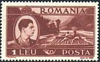
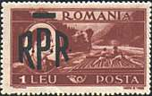
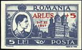

MONETARY REFORMS AFTER THE W.W.II
AS SHOWN BY THE ROMANIAN STAMPS
I have had the idea of this page during the work on the page dedicated to the Danube - Black See canal. On that page I presented some recent stamps, showing sometimes huge surcharged values, what brought me to idea to take a more attentive look at surcharged stamps of different periods in the Romanian history, in order to try to understand what provoked their apparition and to make some comparisons.
Let's start with two definitions. Inflation: an abnormal increase in the volume of money and credit resulting in a substantial and continuing rise in the general price level Deflation: reduction of the volume of the available money or credit resulting in the decline of the general price level.(Merriam-Webster Dictionary, 1989).
The August 15, 1947 monetary reform
From August 1944 and a long time after it Romania was occupied by Soviet troops. The Soviet government has pursued on the Romanian territory the same economic policies that is has pursued in its own country and in all countries that it controlled in the Eastern and Central Europe, i.e. the nationalization of the industry, the collectivization of the agriculture and the centralized planning of the whole economy. The result was the increased impoverishment of the population, hunger and also inflation. This inflation was of course reflected on the stamps of that period, the highest value of Lei 50,000 being issued in March 1947 (King Michael, Sc. 664, Mi. 1036).
On August 15, 1947 the Romanian government has deflated the currency, by permitting the exchange of only a limited amount of the old money against the new one. This was its first monetary blow against its declared enemy, the Romanian bourgeoisie. Please see below the stamp with the second highest value, that of Lei 36,000, surcharged with a new value of Lei 2 (plus a surtax of Lei 3 for the games). This stamp, issued on September 6, 1947, commemorated the Balkan Athletic Games in Bucharest, Sc. B368, Mi. 1077. (CBA means in Romanian language: Campionatele Balcanice de Atletism). The stamp belongs to the Sport on Stamps topic, even if the fact is not self-evident. An attentive philatelic eye will notice a curiosity, a difference in the intensity of color on the twin stamps shown below.
 |
 |
 |
 |
The stamp dedicated to the second congress of the Romanian Association for
the Relationship with the Soviet Union (above, on the right) is very
interesting too. The nominal value of the stamp hasn't changed (of course
its real value has, due to the monetary reform), only a surcharge was added,
asking Romanians generally, and the stamps collectors particularly, for
their financial help in order to establish a new dictatorship.
The then young
King Michael had all reasons to look upset on stamps, not only because of
monetary reforms,
but especially because he possible had the premonition that only one year
later he will be obliged to abdicate and to quit Romania. His image on the
stamp (middle, left) was brutally overprinted (on the stamp middle, right) with three bold
black letters, R.P.R.
(Sc 684-694, Mi.1106-1116); the crown was overprinted with
a bar. RPR had the meaning: Romanian Popular Republic. The idea was that the
monarchy, and with it 80 years of the Romanian's past, should be erased from
the memories of the future new men. Just to note that the creation of the
new man is the dream and the main goal of all communist regimes.
Feedback:
-
I want to congratulate you on your Romanian Inflation web pages! A job well done! I have bookmarked them for easy future reference. Your fine web site has provided me with a wealth of information to accurately "write up" my Romanian covers! Neil H.